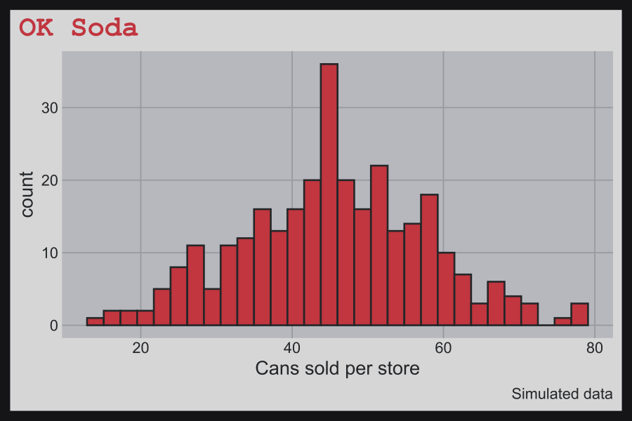
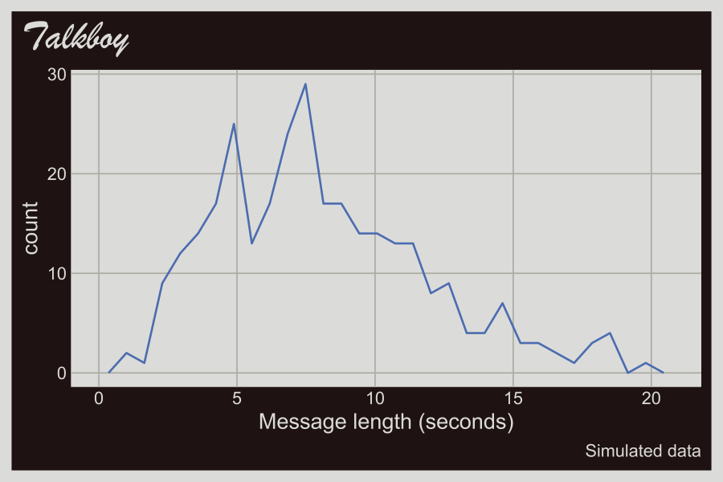

fmggp2 is the support package for ggplot2: field manual. It holds the late 90s ggplot2 themes and the small helpers the book uses, so every chapter loads the same tested code.
Installation
Install the development version from GitHub:
# install.packages("pak")
pak::pak("mjfrigaard/fmggp2")Themes
Every example in the book uses simulated data with a 90s throwback, and each dataset gets a theme to match.
| Theme | Reference | Chapter |
|---|---|---|
theme_surge() |
Surge | Hexagon bins (cans vs. gaming hours) |
theme_geocities() |
GeoCities | 2D histograms (page load times) |
theme_bopit() |
Bop It | Density contours (reaction times) |
theme_clueless() |
Clueless | Parallel sets (Bronson Alcott cliques) |
theme_powerrangers() |
Power Rangers | Grouped bubble charts (putties defeated) |
theme_seinfeld() |
Seinfeld | Bubble charts (Seinfeld episodes) |
theme_consolewars() |
Console wars | Grouped scatter plots (Sega vs. Nintendo) |
theme_doom() |
Doom | Scatter plots (frame rate by CPU speed) |
theme_gushers() |
Fruit Gushers | Instance charts (lunch table trades by year) |
theme_y2k() |
Y2K | Alluvial charts (Y2K prep surveys) |
theme_hypercolor() |
Hypercolor | Stream plots (90s fad sales) |
theme_savedbythebell() |
Saved by the Bell | Slope graphs (Bayside quiz averages) |
theme_boyband() |
Boy bands | Bump charts (weekly radio spins) |
theme_snick() |
SNICK | Grouped line graphs (nightly Nickelodeon ratings) |
theme_batman() |
Batman (1989) | Line graphs (weekly box office) |
theme_rzone() |
Tiger R-Zone | Raincloud plots (seconds to clear the first level) |
theme_aim() |
AOL Instant Messenger | Grouped violin plots (buddy list sizes) |
theme_oregontrail() |
The Oregon Trail | Grouped box plots (days to reach Oregon) |
theme_squeezit() |
Squeezit | Ridgeline plots (seconds to finish a bottle) |
theme_furby() |
Furby | Overlapping and stacked densities (Furby chatter) |
theme_tetris() |
Tetris | Beeswarm plots (lines cleared by player) |
theme_goosebumps() |
Goosebumps books | Overlapping dot plots (books read by grade) |
theme_supersoaker() |
Super Soaker | Overlapping frequency polygons (range by model) |
theme_tamagotchi() |
Tamagotchi | Overlapping histograms (virtual pet lifespans) |
theme_toysrus() |
Toys”R”Us | Treemaps (1998 toy sales) |
theme_koosh() |
Koosh ball | Pie charts (Koosh ball styles) |
theme_titanic() |
Titanic (1997) | Mosaic plots (moviegoers and viewings) |
theme_netscape() |
Netscape Navigator | Stacked filled densities (modem speeds) |
theme_orbitz() |
Orbitz | Diverging bar graphs (Orbitz vs. Surge survey) |
theme_walkman() |
Sony Walkman Sports | Cleveland dot plots (battery life by model) |
theme_pogs() |
Pogs milk caps | Waffle charts (a collection of 100 Pogs) |
theme_freshprince() |
The Fresh Prince of Bel-Air | Heatmaps (running gags per season) |
theme_friends() |
Friends (Monica’s apartment) | Overlapping bar graphs (viewers per episode) |
theme_happymeal() |
McDonald’s Happy Meal box | Summary bar graphs (Happy Meals sold per promotion) |
theme_jurassic() |
Jurassic Park (1993) | Grouped bar graphs (dinosaur weights per paddock) |
theme_n64() |
Nintendo 64 | Box plots (Mario Kart 64 lap times) |
theme_beanie() |
Beanie Babies heart tag | Violin plots (resale prices) |
theme_crystalpepsi() |
Crystal Pepsi | Density plots (taste test ages) |
theme_blockbuster() |
Blockbuster Video | Dot plots (weekly rentals) |
theme_gameboy() |
Original Game Boy screen | Bar graphs (Pokémon starters) |
theme_oksoda() |
OK Soda | Histograms (cans sold per store) |
theme_talkboy() |
Talkboy | Frequency polygons (recorded message lengths) |
theme_fmggp2() |
Original book theme | Chapters not yet converted |
library(fmggp2)
library(ggplot2)
showtext::showtext_auto()
set.seed(1014)
ok_soda_sales <- data.frame(cans = round(rnorm(300, mean = 45, sd = 12)))
ggplot(ok_soda_sales, aes(x = cans)) +
geom_histogram(bins = 30) +
labs(title = "OK Soda", caption = "Simulated data",
x = "Cans sold per store") +
theme_oksoda(base_size = 13)
set.seed(1999)
talkboy_clips <- data.frame(seconds = round(rgamma(300, shape = 4, rate = 0.5), 1))
ggplot(talkboy_clips, aes(x = seconds)) +
geom_freqpoly(bins = 30) +
labs(title = "Talkboy", caption = "Simulated data",
x = "Message length (seconds)") +
theme_talkboy(base_size = 13)
Book helpers
| Function | What it does |
|---|---|
co_box() |
Prints a Quarto callout box (use with results: asis) |
status() |
Prints a chapter status callout |
%nin% |
The negation of %in%
|
How the chapters teach distributions
Each chapter simulates its data from a known distribution, then connects that distribution to the graph in a “Distribution” section. The section follows the concrete, pictorial, abstract sequence from Singapore math:
- Count it (concrete): print a handful of simulated values and a small count table.
- Draw it (pictorial): draw a bar model (parts of a whole), then the graph with reference lines.
- Name it (abstract): state the generating distribution (e.g., ) and show how each parameter maps to the graph.